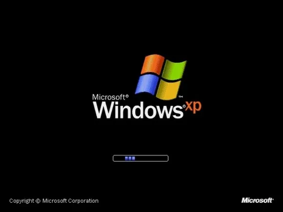

Microsoft Windows
¿Que es?
Windows es el nombre de una familia de distribuciones de software y sistemas operativos para PC, servidores, sistemas empotrados y anteriormente teléfonos inteligentes desarrollados y vendidos por Microsoft desde 1985 y disponibles para múltiples arquitecturas, tales como x86, x86-64 (x64) y ARM.
Caracteristicas del sistema operativo:
- Su lenguaje ensablador es C, C++
- Su tipo de nucleo es Monolítico (versiones basadas en MS-DOS) Híbrido (versiones basadas en Windows NT)
- Implementa un sistema de control de acceso mediante listas (ACLs) y Control de Cuentas de Usuario (UAC), lo que permite gestionar permisos granulares para usuarios y procesos.
- El núcleo de Windows combina elementos de microkernel y kernel monolítico, permitiendo mayor modularidad sin sacrificar rendimiento. Soporta multitarea, multiprocesamiento simétrico (SMP) y gestión avanzada de hilos.
- Lo encuentras instalada en todos los equipos de Oficina.
- Permite ejecutar aplicaciones tradicionales de 32/64 bits (Win32), aplicaciones modernas con Universal Windows Platform (UWP), y proporciona un subsistema para ejecutar binarios de Linux (WSL), facilitando el desarrollo multiplataforma.
- Soporta procesadores Intel o AMD
Historia de Microsoft Windows
Microsoft Windows fue lanzado en 1985 como una interfaz gráfica sobre MS-DOS, utilizando una arquitectura de 16 bits. A lo largo de los años, evolucionó desde un simple entorno gráfico (Windows 1.0) hacia un sistema operativo completo y robusto. En 1993, con Windows NT, Microsoft introdujo un nuevo kernel híbrido diseñado desde cero, con soporte para multitarea real, seguridad basada en ACLs y arquitectura modular. Esto sentó las bases para las futuras versiones modernas del sistema. En 2001, Windows XP unificó las líneas de consumo y profesional sobre la base de Windows NT, combinando estabilidad con una interfaz gráfica amigable. Luego, versiones como Windows Vista, 7, 8 y 10 introdujeron mejoras en el modelo de drivers (WDDM), sistema de archivos, y soporte para nuevas arquitecturas como x64. Desde Windows 10, el sistema pasó a un modelo de servicio (Windows as a Service), con actualizaciones continuas y soporte para contenedores, subsistema de Linux (WSL) y entornos de desarrollo integrados como PowerShell Core y Windows Terminal.
En 2001, ambas líneas convergieron en Windows XP, que combinó estabilidad y compatibilidad, y se mantuvo como estándar por casi una década. En 2007, llegó Windows Vista, con mejoras en seguridad (UAC), gráficos (Aero), y un nuevo modelo de drivers (WDDM), pero con alto consumo de recursos. Windows 7 (2009) optimizó todo lo anterior, ganando gran popularidad por su rendimiento y compatibilidad.
En 2007, llegó Windows Vista, con mejoras en seguridad (UAC), gráficos (Aero), y un nuevo modelo de drivers (WDDM), pero con alto consumo de recursos. Windows 7 (2009) optimizó todo lo anterior, ganando gran popularidad por su rendimiento y compatibilidad.

Luego, Windows 8 (2012) apostó por una interfaz táctil (Modern UI), eliminando el botón de inicio, lo que causó rechazo entre usuarios. Windows 8.1 corrigió parcialmente esto.
3 Distribuciones
Estas son 3 distribuciones mas conocidas de Windows
Windows
Home
Windows Home Edición orientada al uso doméstico. Tiene funciones básicas del sistema operativo, como Cortana, Microsoft Store y escritorio remoto limitado. No incluye características avanzadas como BitLocker o políticas de grupo.
Windows
Professional
Edición para usuarios profesionales y pequeñas empresas. Añade características como BitLocker, Hyper-V, unión a dominio, Windows Sandbox y acceso a directivas de grupo (Group Policy).
Windows
Enterprise
Dirigida a grandes organizaciones. Basada en Windows Pro, pero con funciones avanzadas como AppLocker, DirectAccess, Windows Defender Application Control, y soporte para Long-Term Servicing Channel (LTSC) en ciertas versiones, lo que permite estabilidad a largo plazo sin cambios frecuentes.
Requerimientos recomendados:
Windows Home
- Procesador 2+ GHz, 4 núcleos
- 8 GB RAM
- SSD de 128 GB o más
- GPU compatible con DirectX 12 y WDDM 2.0
- Resolución Full HD (1920x1080)
Windows Professional
- CPU multinúcleo (Intel i5/Ryzen 5)
- 8–16 GB RAM
- SSD NVMe de 256 GB o más
- TPM 2.0 + Secure Boot
- Soporte para virtualización (VT-x / AMD-V)
Windows Enterprise
- CPU de nivel empresarial (i5/i7 o Ryzen 5/7 Pro)
- 16+ GB RAM
- SSD de 512 GB
- TPM 2.0 + UEFI Secure Boot
- Red corporativa con Active Directory / Azure AD
- Compatibilidad con funciones como AppLocker y Virtualization Based Security (VBS)
Requerimientos minimos:
Windows Home
- Procesador 1 GHz, 2 núcleos, 64 bits
- 4 GB RAM
- 64 GB de almacenamiento
- TPM 2.0 y Secure Boot
- GPU con DirectX 12
Windows Professional
- 4 GB RAM
- 64 GB de almacenamiento
- TPM 2.0 y Secure Boot
- GPU con DirectX 12
Windows Enterprise
- 4 GB RAM
- 64 GB de almacenamiento
- TPM 2.0 y Secure Boot
- GPU con DirectX 12